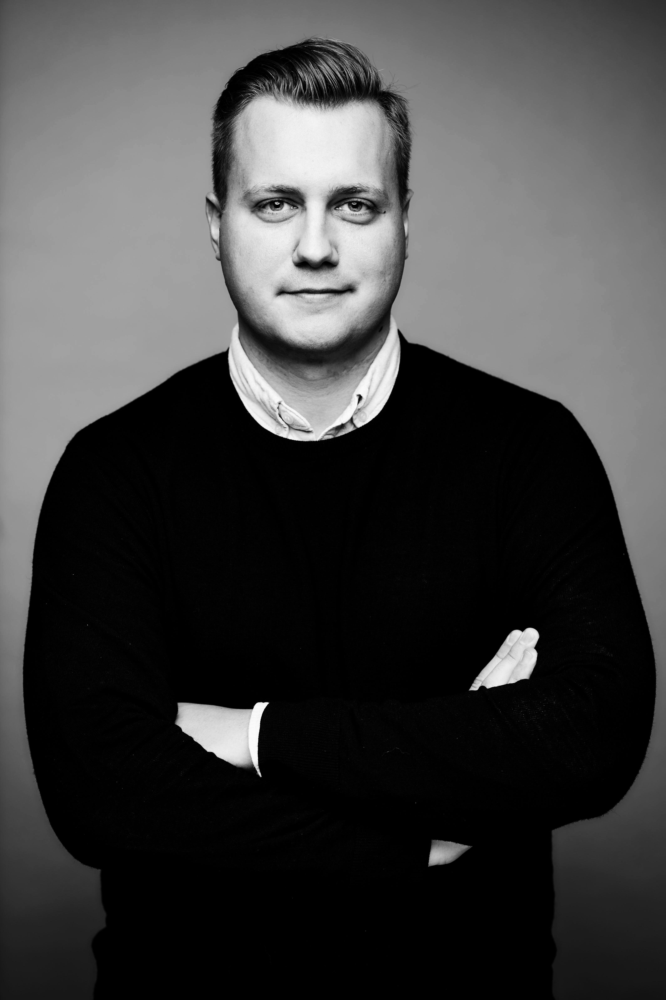

I am a Research Engineer specializing in 4D tracking algorithms and image processing applications in both life and materials science. My work focuses on developing quantitative imaging and analysis methods for extracting dynamic 3D information from digital holographic microscopy data, with applications ranging from microbial motility and flagellar kinematics to volumetric characterization of transparent materials.
I completed my PhD at ETH Zurich, Department of Civil, Environmental and Geomatic Engineering in collaboration with Lyncee Tec and the Stocker's group at the Institute of Environmental Engineering. My research centered on high-precision 4D tracking of microscopic systems using holographic imaging, combining image processing, computational reconstruction, and quantitative analysis to study complex three-dimensional dynamics in challenging experimental conditions.
Before joining ETH Zurich in 2021, I earned my Master’s degree in Mechatronics and Photonics Engineering at the Warsaw University of Technology, Faculty of Mechatronics. During my undergraduate years, I participated in several research projects with the BioPhase Imaging group, under the supervision of Małgorzata Kujawińska.